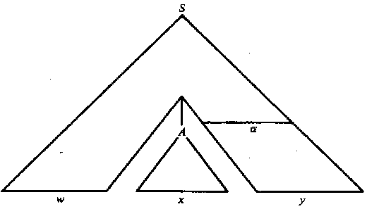

|
Traductores e Intérpretes UCAB : Analisis Sintactico Descendente Predictivo
This page last changed on Nov 08, 2006 by juanca.
En la introducción al Analisis Sintactico Descendente (ASD) vimos como las implementaciones de los analizadores sintácticos recursivos con retroceso (ASDRR) podían producir programas sumamente ineficientes por el carácter no determinista de la solución subyacente. Por ejemplo, en la siguiente gramática:
observamos que, ante una configuración: (w$, Ba$) para hacer el análisis eficiente debíamos hacer la sustitución B → e solo si los siguientes cuatro símbolos en la entrada eran abb$, y la sustitución B → DB de lo contrario. Es posible transformar la gramática en una equivalente de manera que el analizador recursivo resultante sea eficiente:
Ante esta situación, debemos preguntarnos:
Gramáticas LL(k)En general no es posible (no sabemos como) construir analizadores sintácticos eficientes para cualquier gramática. A pesar de eso, dada una Gramatica Independiente del Contexto y un entero k específico, si podemos hacer lo siguiente:
Las gramáticas para las cuales podemos decidir de manera inambigua la producción a utilizar en cada paso de una derivación mirando solo k símbolos de entrada se llaman gramáticas LL(k) y los lenguajes generados por esas gramáticas se llaman lenguajes LL(k). El nombre LL(k) significa lo siguiente:
La mayoría de los lenguajes de programación de uso común se describen mediante gramáticas LL(1). Se puede demostrar que para que una gramática G sea LL(k), G debe ser:
Determinar el valor de k es No-DecidibleDesafortunadamente, dada una gramática G no es posible en general darle respuesta a la pregunta: ¿Es G una gramática LL(k) para algún k? Más formalmente, la pregunta es no-decidible; es decir, la única manera de contestarla es probar (tal vez indefinidamente) con distintos valores de k hasta encontrar uno para el cual la gramática sea LL(k). Ambigüedad, Recursión Izquierda, Prefijos Comunes, y LL(k)A pesar de que el problema LL(k) es en general no-decidible, es fácil demostrar que ninguna gramática que posea alguna de las siguientes características es LL(k):
Por eso, antes de tratar de comprobar si una gramática es LL(k), primero eliminamos la recursión izquierda, y examinamos los prefijos comunes para decidir si debemos eliminarlos. Definición Formal de LL(k)Sea G=(N, S, P,S) una gramática inambigua y w=a1a2...an una sentencia o frase en L(G) (el lenguaje generado por G). Entonces (por la definición de ambigüedad) existe una secuencia única de formas sentenciales izquierdas α0,α1,..,αn tal que:
La derivación izquierda de w es entonces p0,p1,...,pn, donde pi es la producción con el número i. Deseamos encontrar dicha derivación conociendo solo:
Dada una forma sentencial izquierda α=xβ, donde x ∈ Σ* y β comienza por un no-terminal o es ε, decimos que x es la parte cerrada de α y que β es la parte abierta de α.  Función FIRSTDefinimos la función FIRSTk(α) de la siguiente manera:
La función FIRSTk(α) regresa el conjunto de prefijos de longitud k de las secuencias de terminales que pueden ser derivadas de α, o de longitud menor que k si α genera secuencias de terminales de longitud menor a k. Función FOLLOWDefinimos la función FOLLOWk(A) para A ∈ N de la siguiente manera:
Es decir, FOLLOWk(A) es el conjunto de todas las secuencias de k símbolos que pueden seguir a los lados derechos de A en una derivación. Definición de LL(k)Dada una gramática libre de contexto G=(N, Σ, P,S), decimos que G es LL(k) para un entero dado k si siempre que hay dos derivaciones izquierdas:
y además:
entonces:
Es decir, una gramáticas es LL(k) si dada una forma sentencial izquierda wAα y, z, los siguientes k símbolos a ser derivados de Aα (la parte abierta de la forma sentencial), entonces hay a lo sumo una única producción cuyo lado derecho puede ser sustituida por A para derivar una sentencia con prefijo wz. k-ConcatenacionDefinimos el operador ⋅k de la siguiente manera:
Si L y M son subconjuntos de Σ*, entonces definimos:
Gramáticas Fuertemente LL(k)Una gramática es fuertemente LL(k) si para todo par de producciones A → α y A → β en P se cumple que:
también:
Todas las gramáticas LL(1) son fuertemente LL(1), pero no todas las gramáticas LL(k) con k > 1 son fuertemente LL(k). Por ejemplo, la siguiente gramática es LL(2) (cumple con la definición de LLk para k=2), pero no es fuertemente LL(2):
El lenguaje generado por esa gramática es:
Secuencias Predictivas para Lenguajes Fuertemente LL(k)Las secuencias predictivas para las producciones A → α son las concatenaciones:
Dichas secuencias indican que cuando:
La producción a emplear en ese paso de la derivación es sin duda A → α. Cálculo de FIRSTk(α)Calculamos FIRSTk(X), para todo X ∈ (Σ ∪ N) de la siguiente manera:
Como F(A) ∈ Σ0..k, y Σ0..k es finito, entonces debemos llegar a un punto en el cual todo F(A)=F'(A) (en que ninguno de los conjuntos crece) para todo A ∈ N. Entonces nos detenemos, y hacemos FIRSTk(A) = F(A). Nótese que:
Entonces, calculamos FIRSTk(α), donde α=Y1Y2...Yn de la siguiente manera:
o
Cálculo de FOLLOWk(α)
Otra versión del mismo algoritmo es:
Cálculo se Secuencias PredictivasDada una Gramatica G=(Σ N, P, S) obtenemos la secuencia predictiva Fuertemente LLk para cada producción A → α ∈ P así:
Cálculo de la Tabla de Análisis Predictivo (Tabla LA)Una tabla de análisis predictivo (Look-Ahead Table, o LA Table) para una Gramatica Fuertemente LLk se genera de la siguiente manara.
Ejemplo LL(2)Consideremos la siguiente Gramatica:
Primero reescribimos la gramática numerando las producciones:
Cálculo de FIRST2Los conjuntos F(X) iniciales según el algoritmo de cálculo de la fución FIRST son:
Cada iteración del algoritmo de cálculo de la fución FIRST lleva a cabo las siguientes operaciones:
Y las simplificamos así:
Calculamos FIRST⋅2(X) para todo X ∈ N iterativamente, de la siguiente manera:
Cálculo de FOLLOW2Los conjuntos FL(X) iniciales según el algoritmo de cálculo de la función FOLLOWk son:
Cada iteración del algoritmo de cálculo de la fución FOLLOWk lleva a cabo las siguientes operaciones:
Simplificando:
Calculamos FOLLOW2(X) para todo X ∈ N iterativamente, de la siguiente manera:
Cálculo de secuencias predictivas LA2Las secuencias predictivas para las producciones *X → β son:
Dado que:
Construimos las Secuencias Predictivas así:
Tabla de Análisis Sintáctico Descendente PredictivoPara cada X ∈ N y cada secuencia w ∈ Σ2 colocamos el lado derecho y el número de la producción correspondiente en la celda correspondiente. Podemos también colocar filas para los símbolos terminales aunque el contenido de las celdas asociadas sea obvio:
Ejemplo LL(1)Sea la gramática:
Transformaciones requeridasPrimero eliminamos la recursión izquierda:
Simplificamos sustituyendo D por D':
Ahora eliminamos el prefijo común P en las producciones con lado izquierdo L:
Numeramos las producciones:
Cálculo de FIRST1Los conjuntos iniciales F(A), A ∈ N, son:
Producimos las fórmulas para FIRST1(A), A ∈ N:
Y las simplificamos así:
Calculamos FIRST1(A) , A ∈ N:
Cálculo de FOLLOW1Los conjuntos iniciales FL(A), A ∈ N, son:
Producimos las fórmulas para FOLLOW1(A), A ∈ N:
Calculamos FOLLOW1(X), X ∈ N:
Secuencias predictivasCalculamos las secuencias predictivas LA(p), p ∈ P:
Tabla de análisis sintáctico LA1Calculamos la tabla LA1(A,w), para todo A ∈ N y w ∈Σ1:
|
| Document generated by Confluence on Oct 04, 2010 11:24 |